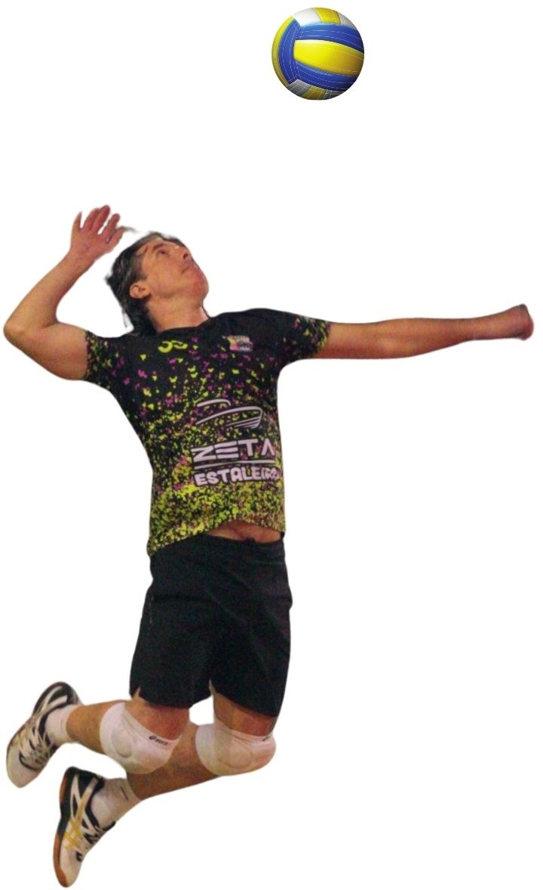

Bem-vindos à história (resumida) do pseudo-jogador de vôlei Luciano Smanioto, também conhecido no universo da bola como "Morty" ou "Assassino".
* O Início
Tudo começou em 1987, por acaso, em campeonatos escolares.
* O Meio
Em 1991 fui aprovado na peneira de um clube chamado Sogipa, então campeão brasileiro juvenil. Como o incentivo financeiro era pequeno e minha altura (1m88) era muito baixa para os padrões da época - muito mais baixa ainda pros padrões atuais - acabei não ficando no clube. Jogaria campeonatos federados por outros times até 1999.
* A Aposentadoria
Joguei esporadicamente aqui e ali até 2018, quando voltei a jogar regularmente. Porém, com 7 lesões em 5 anos, aposentei a joelheira em novembro de 2022, quando tive uma luxação exposta no mindinho após um bloqueio.
* The Walking Dead
Na FMP, encontrei uma galera praticando e acabei organizando um voleizinho, voltando às quadras, muito na manha, tipo zumbi.
